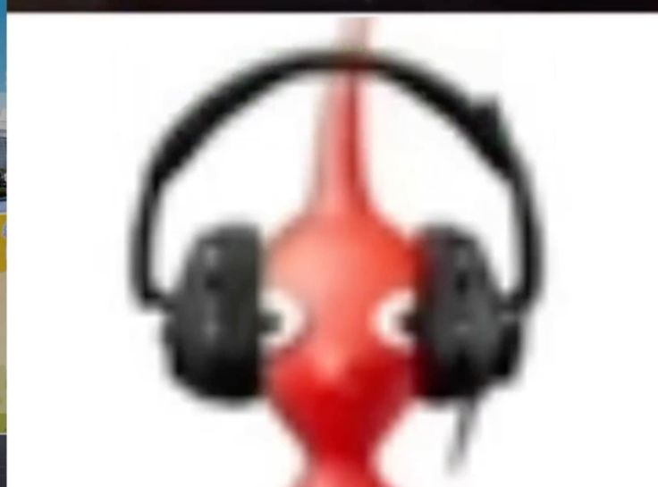

ชื่อ-นามสกุล: มาม่า
ชื่อเล่น: น้ำราเม็ง
สาขาวิชา: DIT
กลุ่มเรียน (Section): G1

เหตุผลที่อยากเรียน: อยากทำเว็บเป็นแบบครบจบในคนเดียว ทั้งหน้าตาเว็บที่ผู้ใช้เห็นและการจัดการระบบหลังบ้าน เพราะรู้สึกว่ามันต่อยอดไอเดียโปรเจกต์ใหม่ๆ ได้เยอะดีครับ
ความคาดหวังต่อวิชานี้: คาดหวังว่าจะเข้าใจภาพรวมการเชื่อมต่อระหว่าง Frontend กับ Backend และสามารถเขียนเว็บใช้งานได้จริงสักตัวหนึ่งหลังจากเรียนจบวิชานี้ครับ
จุดอ่อนที่ต้องพัฒนาและแนวทางแก้ไข: จุดอ่อนคือชอบลืม Syntax กับบางทีสับสนเรื่องการรับส่งข้อมูลระหว่างหน้าเว็บกับฐานข้อมูลครับ แนวทางแก้ไขคือต้องลงมือเขียนโค้ดบ่อยๆ ลองแก้ Bug เองเยอะๆ แล้วก็หมั่นเปิดดู Documentation ครับ
เว็บที่ชอบ: GitHub (ชอบเพราะเป็นแหล่งรวม Inspiration และเป็น Community ที่นักพัฒนาเข้ามาแชร์โปรเจกต์เจ๋งๆ กันครับ)